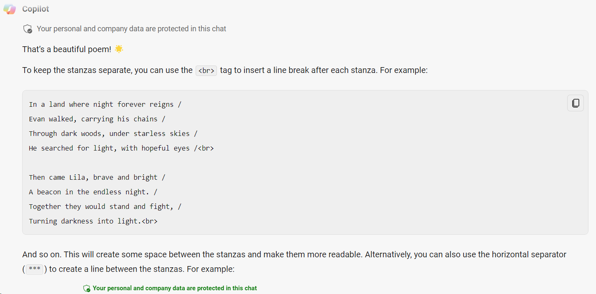
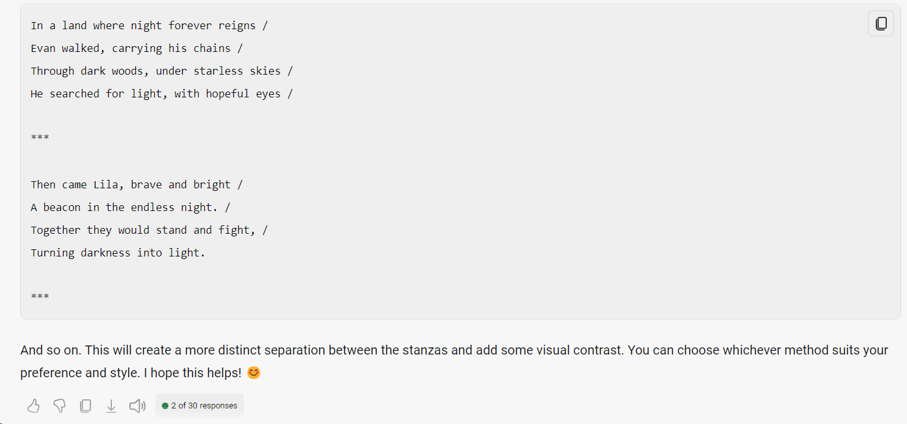
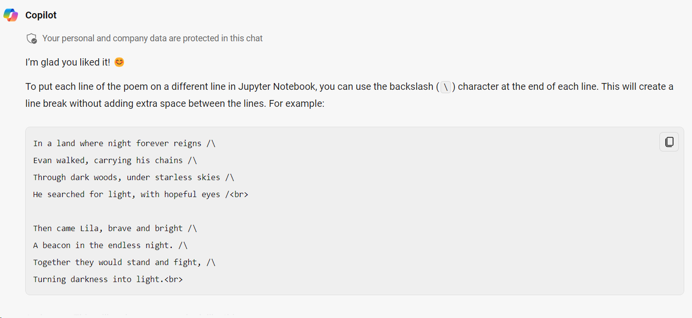

Storybook Struggles (Part II)
Valentine’s Day is technically over, but that doesn’t mean that love is dead!
Below I’ve continued with my effort to get ChatGPT to write me a story that I’ll enjoy.
Love in darkness
In Part I, I tried to get ChatGPT to write me a horror-themed love story - however, I really let myself get distracted by the system’s word count function…
In this post, we’ll continue to explore ChatGPT’s creativity.
This is the story we had by the end of the last post:
In a realm where shadows reigned supreme, Evan found himself lost, wandering amidst the whispers of the past that clung to him like a second skin. It was in this realm of eternal night that Lila appeared, a luminous beacon in the oppressive darkness. Her presence was a balm to his frayed edges, a light guiding him back from the brink of despair.
Their love was an unexpected gift, a rare bloom in the heart of a shadowed forest. It was a love that spoke in soft whispers and tender touches, a promise made in the silent communion of their souls. Together, they forged a sanctuary amidst the darkness, a haven where light reigned supreme.
The world around them took notice, the night itself seemed to hold its breath in reverence of their bond. In the heart of darkness, they discovered an enduring truth: love, once kindled, cannot be extinguished. It burns brightly, a beacon of hope that guides the lost back home.
Their story, a testament to the enduring power of love, remains a beacon of hope for all who wander in the shadowed realms, a reminder that even in the darkest of nights, love finds a way.
The story was solid - and finally met the word count requirements - but it wasn’t very interesting, was it? I wanted more plot to follow to keep readers engaged, so I followed up with:
Can you give the story a real plot? Nothing really happens in it right now
ChatGPT replied with an updated tale:
In a land shrouded in perpetual night, Evan, a wanderer haunted by his past, sought solace in the heart of the darkness. The forest, alive with whispers of the lost and the damned, offered no reprieve for his tormented soul. It was here, amid the ancient trees, that he stumbled upon Lila, a rebel fighting against the darkness that threatened to engulf their world.
Lila, wielding light as her weapon, had long battled the shadows that sought to claim the land. Her spirit, unbroken despite the encroaching gloom, ignited a spark within Evan. Together, they embarked on a perilous quest to vanquish the darkness, their bond forged in the fires of their shared struggle.
Their journey led them through haunted valleys and over mountains cloaked in despair. They faced creatures born from the deepest shadows, each victory bringing them closer to their ultimate confrontation with the darkness itself. As they approached the heart of the night, where shadows were thickest, their love was tested in ways they could never have imagined.
In the final battle, beneath the shadow of the world’s oldest tree, their combined light shattered the darkness. But victory came at a cost: Lila was consumed by the very shadows they sought to destroy, her sacrifice ensuring the dawn of a new day.
Evan, heartbroken yet undeterred, carried their story forward, a tale of love’s triumph over darkness. Lila’s light lived on within him, a beacon for all who navigate the night. Their saga, a testament to the power of love and sacrifice, inspired generations, a reminder that
This was better!! Now, I understand that their land was taken over by a dark force, and that they were both working to defeat the evil - a noble cause, indeed!
Changing the genre
Now I was interested in seeing how ChatGPT would pivot from the original task:
Great! Now your task has changed. You originally thought that you needed to write a story for adults but your publisher actually needs you to write a story for children. Please adapt this current story into a tale for children. Incorporate the same plot points, but split the story into rhyming stanzas - no more than 6.
ChatGPT did a pretty good job, providing the following output:
In a land where night forever reigns
Evan walked, carrying his chains
Through dark woods, under starless skies
He searched for light, with hopeful eyes
Then came Lila, brave and bright
A beacon in the endless night.
Together they would stand and fight,
Turning darkness into light.
Through valleys deep and mountains high,
Beneath the never-lighting sky,
They battled shadows, side by side,
With love and courage as their guide.
At the world’s heart, where shadows dwell,
They faced the dark, a final knell.
Lila’s light, pure and bright,
Shattered the eternal night.
But in her light’s brilliant flare,
She faded, leaving Evan there.
Her sacrifice, a new dawn’s birth,
Brought morning’s light back to the Earth.
Evan’s heart, both strong and true,
Carries her light the whole world through.
A tale for all, both big and small,
Of how love’s light conquers all.
It was well done, and it incorporated both the rhyming, as well as the stanza limit I imposed! However, I still wans’t really enjoying the story.
I prompted again:
Pretty good - but can you incorporate more specific plot? What are they doing? Who are they fighting? Incorporate some specific fantasy or horror elements to make the story more interesting to an audience
ChatGPT’s response:
In a realm where shadows ruled the day,
Evan walked a hidden way.
Haunted by whispers, ghosts, and fears,
He wandered long, through endless years.
Lila appeared, with light so grand,
A shining staff held in her hand.
“Together, we’ll make the night retreat,
And all the shadow beasts we’ll beat!”
Through twisted forests, dark and dire,
Past rivers of fire, and mountains higher,
They faced the goblins, ghosts, and more,
Each victory sweeter than before.
At last, they reached the shadow’s heart,
Where the darkest magic did impart.
The Shadow King, with eyes of coal,
Threatened to swallow the world whole.
With Lila’s light and Evan’s might,
They fought the king with all their right.
Lila’s magic filled the air,
And banished darkness from its lair.
But in her final, glorious stand,
She vanished into the shadow land.
Evan wept, for the cost was known,
Her light through his courage shown.
Now children sleep, with dreams so bright,
In the peaceful glow of Lila’s light.
Evan’s tale, from night to morn,
Shows even the scared can be reborn.
This was pretty good - it added a stronger plot, including a battle with a Shadow King, as well as Lila’s sacrifice.
As always, it is fascinating that of all the things we have to check, spelling, grammar, and readability aren’t issues for ChatGPT at all!
Getting a little help from a friend
As I was trying to create this post, I ran into quite a few formatting issues. I had no idea how to get the poem into a stanza format. Instead, the text was coming out looking like this:
In a realm where shadows ruled the day, / Evan walked a hidden way. / Haunted by whispers, ghosts, and fears, / He wandered long, through endless years.
For these types of technical, fact-based issues, I tend to turn towards Copilot to get answers.
I prompted Copilot:
How would I format this in python to keep the stanzas separate?
I also pasted the story into the chat as well.
Copilot responded:
 
I followed up with one more question:
And how can I put each of the lines of different lines? Currently, they appear as a single sentence when I run the cell
And it responded again: 
The answer was very clear and helpful, and it enabled me to create the format
Plus, notice how happy Copilot is to provide input - lots of smiley faces! (ChatGPT never smiles at me…)
Overall, I was very impressed with ChatGPT’s text generation skills!